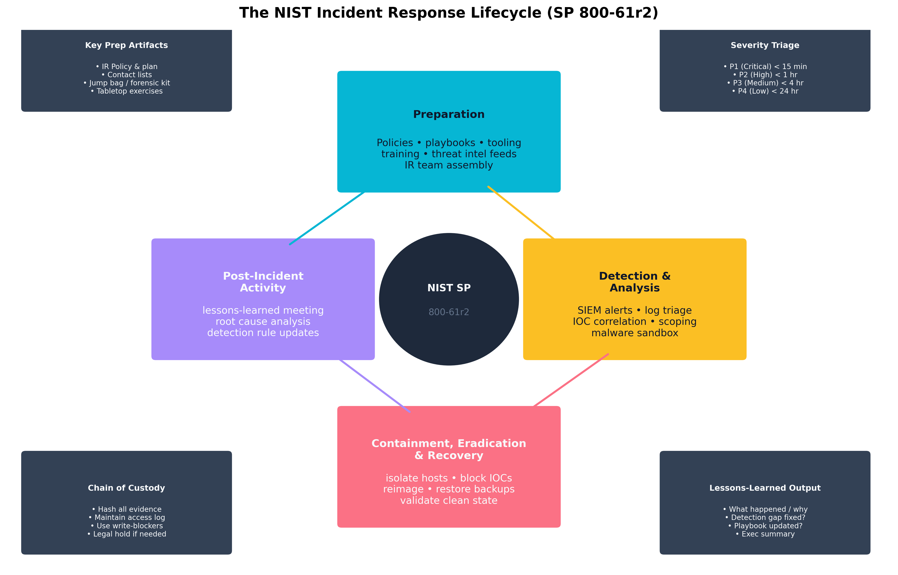

Chapter 12: Vulnerability Management, Automation, and Incident Response
Aligned SecurityX Objectives:
- 4.2: Given a scenario, analyze vulnerabilities and attacks, and recommend solutions to reduce the attack surface.
- 3.6: Given a scenario, use automation to secure the enterprise.
- 4.4: Given a scenario, analyze data and artifacts in support of incident response activities.
Cloze Problem Set: Alice Liddell Automates Incident Response at Wonderland Logistics
Learning Outcomes:
- Analyze common vulnerabilities and implement appropriate mitigations.
- Automate security operations using scripting, Infrastructure as Code (IaC), and generative AI.
- Implement Security Orchestration, Automation, and Response (SOAR) playbooks and runbooks.
- Utilize Security Content Automation Protocol (SCAP) standards for vulnerability scanning and reporting.
- Analyze malware artifacts using detonation, sandboxing, and reverse engineering.
- Conduct volatile and non-volatile storage, network, host, metadata, and cloud workload analysis during incident response.
- Perform insider-threat investigations, root cause analysis, and timeline reconstruction following a security breach.
- Organize and execute preparedness exercises, threat response actions, and recovery workflows to enhance enterprise threat response capabilities.
Introduction
The preceding chapters built walls, locked doors, and installed cameras. This chapter is about what happens when something still goes wrong — and about making "going wrong" as rare and short-lived as possible through disciplined vulnerability management and security automation.
Breaches almost never arise from exotic zero-days wielded by elite nation-state hackers. The vast majority trace back to a known vulnerability that was not patched on time, a misconfiguration that was never caught, a phishing email that bypassed a control that had not been properly tuned, or an incident that escalated because responders could not move fast enough manually. Each of those failure modes has a systematic fix, and this chapter covers all of them.
We begin with the vulnerability landscape — what common software weaknesses look like, how they are scored and tracked through CVSS and CVE, and how SCAP standards turn vulnerability data into machine-readable policy that scanning tools can act on automatically. We then move to security automation — scripting, SOAR playbooks, and IaC — that turn what would otherwise be days of manual analyst work into seconds of orchestrated response. Finally, we walk through the full incident response (IR) lifecycle prescribed by NIST SP 800-61r2: preparation, detection and analysis, containment and eradication, recovery, and post-incident activity — the loop that every mature security program runs continuously.
How Do We Manage and Mitigate Vulnerabilities?
Vulnerability management is the continuous process of discovering, prioritizing, remediating, and verifying weaknesses before adversaries exploit them. The discipline spans software vulnerabilities (injection flaws, memory errors, weak cryptography), configuration weaknesses (open ports, default credentials, overly permissive IAM roles), and the patch lifecycle that keeps every OS, application, hypervisor, and firmware image current.
Common Software Vulnerability Classes
Software vulnerabilities cluster into recurring patterns. Understanding the class of a vulnerability — not just the specific CVE — allows a defender to build architectural mitigations that neutralize whole families at once.
Injection is the oldest and most persistent class. When an application passes untrusted user input directly to an interpreter — SQL engine, operating system shell, LDAP directory, XML parser — the attacker can cause that interpreter to execute commands the developer never intended. The fix is always the same regardless of the underlying technology: validate input strictly, use parameterized queries or prepared statements, and never construct queries by string concatenation.
Example A login form concatenates the submitted username directly into a SQL query:
SELECT * FROM users WHERE username = '+ input +'An attacker submits:' OR '1'='1The resulting query becomes:SELECT * FROM users WHERE username = '' OR '1'='1'which returns all rows, bypassing authentication entirely. A parameterized query —SELECT * FROM users WHERE username = ?with the value bound separately — eliminates this class of attack entirely because the input is never interpreted as SQL syntax.
Cross-Site Scripting (XSS) occurs when an application reflects user-supplied content back to a browser without encoding it, allowing the attacker's JavaScript to execute in the victim's session. Stored XSS persists in the database (a forum post that executes when another user views it); reflected XSS is delivered via a malicious link; DOM-based XSS manipulates the page's Document Object Model in the browser without touching the server at all. The fix is output encoding: every piece of data rendered into HTML must have its special characters (<, >, ", &) converted to their HTML entity equivalents.
Cross-Site Request Forgery (CSRF) tricks an authenticated user's browser into submitting a state-changing request to a site the user is already logged into, using the victim's existing session cookie. Because the browser automatically attaches cookies to every request to the relevant domain, the server cannot distinguish a legitimate form submission from a forged one — unless the application includes an unpredictable CSRF token in every form that the server verifies on submission.
Server-Side Request Forgery (SSRF) is a newer but increasingly critical class where the server itself is tricked into making requests on behalf of the attacker — to internal services, metadata endpoints (the AWS instance metadata service at 169.254.169.254 is the canonical target), or cloud credentials APIs. Defense requires validating and restricting what URLs the application is permitted to contact, ideally through an allow-list.
Insecure deserialization occurs when an application deserializes data from an untrusted source without validation. Because serialization formats (Java's native serialization, PHP's unserialize(), Python's pickle) can encode executable objects, an attacker who controls the serialized payload can sometimes achieve remote code execution. The safest fix is to avoid native deserialization of untrusted data entirely and use data-only formats (JSON, Protocol Buffers) with strict schema validation instead.
Memory unsafety — buffer overflows, use-after-free, integer overflow, format string bugs — remains endemic in C and C++ codebases. These bugs are the substrate for shellcode injection and return-oriented programming (ROP) exploits. Memory-safe languages (Rust, Go, Swift) eliminate whole classes at the language level; where a C/C++ codebase cannot be rewritten, mitigations like address space layout randomization (ASLR), stack canaries, and no-execute (NX/DEP) memory pages raise the attacker's cost significantly.
Key Point The OWASP Top 10 is not just a list of bugs — it is a prioritized vulnerability taxonomy organized around impact and prevalence. Understanding it means understanding the root cause of most web-application breaches, which is why CompTIA SecurityX expects you to be able to not only name these classes but describe the underlying mechanism and the correct architectural control for each one.
Configuration and Dependency Weaknesses
Not every vulnerability is in the application code. A large fraction of real-world breaches exploit insecure configurations: default credentials left on a newly deployed device, an S3 bucket with public-read ACL, an SSH service that still allows root login, a cloud IAM role with *:* permissions. A well-run vulnerability management program scans for configuration drift continuously — not just application code flaws.
Embedded secrets are another perennial problem. Hard-coded API keys, database passwords, and private certificates committed into source code repositories get exposed through repository leaks, log shipping, or accidental public disclosure. The correct design is to retrieve secrets from a secrets manager (HashiCorp Vault, AWS Secrets Manager, Azure Key Vault) at runtime, never to store them in code or configuration files.
Vulnerable dependencies are the vulnerability class that Log4Shell (2021) made impossible to ignore. Modern applications have hundreds of third-party libraries; a critical vulnerability in any one of them is a critical vulnerability in every application that ships it. A Software Bill of Materials (SBoM) — a machine-readable inventory of every dependency and its version — is the foundation for answering the question "are we affected?" within hours rather than weeks.
Warning Dependency vulnerabilities are frequently discovered in libraries your team has never directly chosen. A JavaScript frontend may pull in dozens of transitive dependencies through a single
npm install. Tools like Dependabot, Snyk, and OWASP Dependency-Check automate the monitoring and alerting pipeline — but only if they are integrated into the CI/CD pipeline rather than treated as an afterthought.
| Vulnerability Class | Mechanism | Primary Control |
|---|---|---|
| SQL Injection | Unsanitized input concatenated into SQL | Parameterized queries / prepared statements |
| XSS (Stored/Reflected) | Unencoded user input rendered in HTML | Output encoding; Content-Security-Policy header |
| CSRF | Forged request using victim's live session | CSRF tokens; SameSite=Strict cookie attribute |
| SSRF | Server fetches attacker-controlled URL | URL allow-listing; block internal metadata endpoints |
| Insecure Deserialization | Malicious payload in serialized object | Avoid native deserialization of untrusted data |
| Buffer Overflow | Write past allocated buffer boundary | Memory-safe languages; ASLR, NX, stack canaries |
| Hard-Coded Credentials | Secret embedded in source or config | Secrets manager; pre-commit secret scanning |
| Vulnerable Dependency | Known CVE in shipped library | SBoM + automated dependency scanning in CI/CD |
| Insecure Configuration | Default creds, open ports, weak ciphers | Hardening benchmarks (CIS), config drift scanning |
| Table 12.1: Common Software Vulnerabilities and Mitigations. The "Primary Control" column lists the architectural fix — the change that eliminates the root cause rather than just detecting an exploit after the fact. |
CVE, CVSS, and SCAP
Common Vulnerabilities and Exposures (CVE) is the standardized naming system for publicly disclosed vulnerabilities. Every CVE entry gets a unique identifier (e.g., CVE-2021-44228, the Log4Shell identifier), a brief description, and references to advisories and patches. CVE is the vocabulary that lets vendors, defenders, and vulnerability scanners all refer to the same flaw unambiguously.
Common Vulnerability Scoring System (CVSS) provides the standardized severity score for each CVE. CVSS v3.1 (and v4.0, which is being adopted) computes a 0–10 numeric score from a set of metrics organized into three groups:
- Base Score: Intrinsic characteristics of the vulnerability — how it is exploited (network, adjacent, local, physical), how complex the attack is, whether privileges or user interaction are required, and the impact on confidentiality, integrity, and availability.
- Temporal Score: Time-sensitive factors — whether a reliable exploit exists, whether a fix has been issued, and the confidence in the vulnerability report.
- Environmental Score: Organization-specific adjustments — how much a specific asset's confidentiality, integrity, or availability actually matters given its role.
| CVSS Metric Group | Key Dimensions | What It Measures |
|---|---|---|
| Attack Vector (AV) | Network / Adjacent / Local / Physical | How the attacker reaches the component |
| Attack Complexity (AC) | Low / High | Technical difficulty of the attack |
| Privileges Required (PR) | None / Low / High | Pre-existing access level needed |
| User Interaction (UI) | None / Required | Does a victim need to take an action? |
| Scope (S) | Unchanged / Changed | Can the impact cross to another component? |
| Confidentiality Impact (C) | None / Low / High | Data exposure potential |
| Integrity Impact (I) | None / Low / High | Data modification potential |
| Availability Impact (A) | None / Low / High | Service disruption potential |
| Table 12.2: Understanding CVSS Scoring Metrics. A network-exploitable, low-complexity vulnerability with no privileges required and high impact across all three CIA dimensions scores a perfect 10.0. CVSS helps prioritize remediation, but the environmental score — adjusted for your organization's context — is often more operationally relevant than the base score alone. |
Security Content Automation Protocol (SCAP) is a NIST-maintained suite of standards that allows vulnerability-scanning tools to operate against machine-readable policy specifications rather than hand-crafted scripts. The key SCAP components are:
- CVE — vulnerability naming (described above).
- CVSS — severity scoring (described above).
- CPE (Common Platform Enumeration) — standardized naming for hardware, OS, and application versions, so a scanner can precisely identify affected products.
- OVAL (Open Vulnerability and Assessment Language) — an XML language for describing system state checks that a scanner can execute to determine whether a given CVE condition is present.
- XCCDF (Extensible Configuration Checklist Description Format) — an XML language for encoding compliance checklists (like CIS Benchmarks) in a machine-readable form that automated scanners can evaluate and report on.
Example An organization subscribes to the CIS Benchmark for Red Hat Enterprise Linux 8. The benchmark is published as an XCCDF document. The organization's SCAP-compliant scanner (OpenSCAP, Tenable Nessus, Qualys) ingests that XCCDF file and runs the defined OVAL checks against every enrolled Linux host, producing a compliance percentage report and a detailed finding list — entirely automated, without an analyst manually comparing the benchmark checklist row by row.
Thought Question Your vulnerability scanner reports 1,400 open findings, but the engineering team says they can remediate roughly 50 vulnerabilities per sprint. How would you use CVSS base score, temporal score, and environmental score together to produce a defensible priority list? What non-CVSS factors — like whether a finding is on an internet-facing asset — would you also layer in?
How Can Automation Force-Multiply Security?
Security teams are always outnumbered. A 10-person SOC defending a 10,000-employee organization cannot manually review every alert, manually contain every suspicious endpoint, or manually push every patch — the math does not work. Automation is not a nice-to-have; it is how modern security organizations remain viable.
Scripting for Security
Python is the dominant scripting language in security because of its library ecosystem: requests for HTTP automation, scapy for packet crafting, boto3/azure-sdk for cloud API interaction, and an enormous range of vendor SDKs. PowerShell is the essential Windows automation language — every Windows and Microsoft 365 administrative operation is accessible via cmdlets, and incident responders who cannot script PowerShell are at a significant disadvantage. Bash is the substrate of Linux/Unix automation, CI/CD pipelines, and Docker entrypoints.
Effective security scripting focuses on three patterns:
- Scheduled tasks and cron jobs for recurring operations — pulling IOC feeds nightly, running compliance checks weekly, generating metric dashboards hourly.
- Event-driven triggers that fire in response to conditions — a CloudWatch alarm that invokes a Lambda when an IAM role is modified, a webhook from the SIEM that calls a containment endpoint when a high-severity alert fires.
- API and SDK integration that chains multiple tools together — a script that queries the SIEM for all hosts that communicated with a known-bad IP, then calls the EDR API to isolate each one, then opens a ticket in the ITSM with the list and a timestamp.
Example A Python script used in incident containment: ```python import boto3, requests
SIEM_API = "https://siem.internal/api/alerts" EDR_API = "https://edr.internal/api/v1/endpoints"
Pull affected hosts from the SIEM alert
alert = requests.get(SIEM_API + "/alert-4421", headers={"Authorization": "Bearer " + SIEM_TOKEN}).json() affected_hosts = alert["affected_hosts"]
Network-isolate each host via the EDR API
for host in affected_hosts: r = requests.post(EDR_API + f"/{host}/isolate", json={"reason": "SOAR auto-contain: alert-4421"}, headers={"Authorization": "Bearer " + EDR_TOKEN}) print(f"Isolated {host}: HTTP {r.status_code}") ``` This pattern — SIEM alert → enrichment → EDR action — is the core loop of nearly every SOAR playbook, whether implemented as a script or a no-code workflow.
Infrastructure as Code and Configuration Management
Infrastructure as Code (IaC) tools (Terraform, Pulumi, AWS CloudFormation) define infrastructure declaratively in version-controlled files. From a security standpoint, IaC provides several advantages over console-managed infrastructure:
- Drift detection. A CI/CD pipeline can continuously compare the declared state against the actual state and alert or auto-remediate when they diverge.
- Pre-deployment scanning. Tools like Checkov, tfsec, and Snyk IaC scan Terraform and CloudFormation files for misconfigurations (open security groups, unencrypted storage, public bucket ACLs) before they are ever deployed.
- Immutable infrastructure. Containers and VM images are built once, scanned, and deployed. Rather than patching running instances, the image is rebuilt with the patch applied and redeployed — eliminating the drift that accumulates on long-running servers.
Configuration management tools (Ansible, Chef, Puppet) apply and enforce desired state on running systems — ensuring that every Linux server has the same SSH hardening configuration, that every Windows workstation has the same registry security baseline, and that deviations are automatically corrected or flagged.
SOAR Playbooks and Runbooks
Security Orchestration, Automation, and Response (SOAR) platforms (Splunk SOAR, Palo Alto XSOAR, IBM Security QRadar SOAR, Microsoft Sentinel Playbooks) provide a workflow engine that chains security tool APIs together in response to SIEM alerts. A playbook is the automated policy logic — "when a phishing alert fires, do X, then Y, then Z." A runbook is the documented manual procedure that an analyst follows when the automation is not sufficient or when a human decision point is reached.
The value of a SOAR is compression of the mean time to respond (MTTR). Manual triage of a phishing alert — opening the email gateway console, extracting headers, checking VirusTotal, querying Active Directory for the recipient, quarantining the message, documenting the ticket — takes 20–45 minutes per alert. An automated SOAR playbook does the same workflow in under 30 seconds, at any hour, without fatigue.
![A SOAR phishing response playbook. When the email gateway fires a suspicious-message alert, the playbook automatically extracts indicators, checks them against threat intelligence, scores the confidence level, auto-quarantines the message, blocks identified URLs and IPs at the firewall and DNS sinkhole, notifies the reporting user, creates the SIEM incident record, and — if any endpoint made a click or download — isolates it via EDR. Human analyst escalation happens only when the confidence score is below threshold or when the situation requires judgment the playbook cannot provide.](../assets/images/ch12_soar_phishing.png) Figure 12.1: A SOAR phishing response playbook. When the email gateway fires a suspicious-message alert, the playbook automatically extracts indicators, checks them against threat intelligence, scores the confidence level, auto-quarantines the message, blocks identified URLs and IPs at the firewall and DNS sinkhole, notifies the reporting user, creates the SIEM incident record, and — if any endpoint made a click or download — isolates it via EDR. Human analyst escalation happens only when the confidence score is below threshold or when the situation requires judgment the playbook cannot provide.
Figure 12.1: A SOAR phishing response playbook. When the email gateway fires a suspicious-message alert, the playbook automatically extracts indicators, checks them against threat intelligence, scores the confidence level, auto-quarantines the message, blocks identified URLs and IPs at the firewall and DNS sinkhole, notifies the reporting user, creates the SIEM incident record, and — if any endpoint made a click or download — isolates it via EDR. Human analyst escalation happens only when the confidence score is below threshold or when the situation requires judgment the playbook cannot provide.
Key Point SOAR is not "set it and forget it." Playbooks need version control, testing against historical alert data, and regular review as the environment changes. A stale playbook that auto-remediates based on outdated logic can be more dangerous than no automation at all — especially at the containment and blocking stages.
Case Study Alice Liddell Automates Containment at Wonderland Logistics
Alice Liddell, Incident Response Manager at Wonderland Logistics (a 6,000-employee regional freight company), inherited an incident response program that ran almost entirely on heroics: two senior analysts working from memory, a shared Word document called "IR Checklist v7_FINAL_USE_THIS_ONE.docx," and no integrations between the SIEM, the EDR, and the ticketing system.
The breaking point came during a credential-stuffing campaign that hit Wonderland's employee portal on a Friday evening. Twenty-three accounts were compromised before the on-call analyst noticed the spike — two hours after the attack began. By that point, three of the compromised accounts had already been used to access internal shipping manifests and customer data. The post-incident review was blunt: the detection had worked fine; the response had been the bottleneck.
Alice spent the following quarter building a containment automation library in Python. Each function in the library mapped to one atomic response action:
disable_ad_account(username),revoke_entra_sessions(upn),reset_password(username),isolate_endpoint(hostname),create_ticket(title, severity, details). Every function called the relevant vendor API and wrote a structured log entry that could be attached to the IR ticket automatically.She then connected those functions to the SOAR platform as named actions, and built a credential-stuffing playbook: when the SIEM fired an alert with the tag
credential_stuffing_suspected, the playbook automatically disabled the flagged account in Active Directory, revoked all active Entra sessions, forced a password reset, created an incident ticket, and paged the on-call analyst with a pre-populated summary. The analyst's job shifted from four manual steps across three consoles to a single acknowledgment decision: "does this alert look legitimate, or was it a false positive I should close?"During the next credential-stuffing campaign six weeks later, the same 20-minute attack window hit eight accounts. All eight were disabled automatically within 90 seconds of the SIEM alert firing — before any of them could be used to access production systems. Alice's lesson: automation does not replace incident responders. It replaces the mechanical parts of the job so responders can spend their time on the parts that actually require judgment.
Generative AI for Security Operations
Generative AI has entered the security operations workflow in several practical forms:
- Code assist. Large language models help analysts write and debug detection rules (Sigma, KQL, SPL) and response scripts faster, lowering the expertise barrier for less experienced team members.
- Alert summarization. AI-powered SIEM integrations (Microsoft Copilot for Security, Splunk AI) can produce natural-language summaries of multi-event alert chains, saving the analyst five minutes of log-reading at triage time.
- Documentation. Generative AI drafts post-incident reports, runbook updates, and briefings from structured IR data, dramatically reducing the overhead of documentation.
The risks are also real: a model that confidently hallucinates a CVE number or misidentifies a benign process as malware can cause incorrect containment actions. Every AI-suggested action in a security workflow should have a human confirmation step at any containment-or-beyond stage.
How Do We Measure Exposure and Automate Remediation?
Vulnerability scanning is the ongoing practice of systematically probing assets to identify known vulnerabilities, misconfigurations, and missing patches. The two dominant deployment patterns are:
- Authenticated (credentialed) scanning. The scanner is given read-level credentials to the target — a local administrator on Windows, an SSH key on Linux — and reads the installed package list, registry settings, and service configurations directly. Credentialed scans are dramatically more accurate and complete than unauthenticated scans.
- Unauthenticated (network) scanning. The scanner probes from the network, inferring vulnerability status from service banners, TCP responses, and protocol behavior. Useful for discovering unknown assets and misconfigurations visible from the network; misses many OS-level vulnerabilities that are only visible with credentials.
Warning A vulnerability scan result is a snapshot, not a continuous truth. An asset that was clean at 2 a.m. Tuesday can have a new critical vulnerability installed by 10 a.m. Tuesday when an application dependency is updated. Modern vulnerability management programs combine scheduled credentialed scans (weekly or daily) with agent-based continuous assessment (real-time on every endpoint) for a much more current picture.
Containerization in automated security workflows provides another lever. Instead of installing scanning tools directly onto production systems, security workflows increasingly run tools as ephemeral containers — spin up a Trivy container to scan an image, emit the results as a JSON report, destroy the container. This pattern keeps the scanning infrastructure isolated, versioned, and reproducible, and fits naturally into CI/CD pipelines where every code push triggers a security scan before any image is promoted to production.
How Do We Respond to an Active Security Incident?
Incident response (IR) is the organized process of detecting, containing, eradicating, and recovering from security incidents while preserving evidence and learning from the experience. The authoritative U.S. government standard is NIST Special Publication 800-61r2, which defines a four-phase lifecycle that most organizations use as a baseline.

Figure 12.2: The NIST SP 800-61r2 Incident Response Lifecycle cycles through four phases: Preparation (before incidents occur), Detection and Analysis (identifying and scoping the incident), Containment/Eradication/Recovery (stopping the damage and restoring operations), and Post-Incident Activity (learning from the event). The cycle is deliberately continuous — lessons learned feed directly back into preparation for the next incident.Phase 1: Preparation
Preparation happens before any incident. An IR program that begins at the moment of detection is already too late. Key preparation activities include:
- IR policy and plan. A documented, board-approved policy that defines what constitutes a security incident, who has authority to declare one, what the escalation chain looks like, and what legal or regulatory notification obligations exist.
- Playbooks and runbooks. Pre-written procedures for the most likely incident types: ransomware, phishing, credential compromise, insider threat, DDoS. A playbook is worth nothing if the analyst cannot find it or access it when the corporate network is down.
- Communication plan. Who calls whom, in what order, under what conditions. Includes out-of-band communication channels (personal phones, encrypted messaging apps) because the corporate email may be the compromised system.
- IR toolset readiness. A jump bag or forensic kit pre-loaded with write-blockers, bootable forensic media, clean storage drives, and documented tool installations on hardened analysis workstations.
- Tabletop exercises. Regular simulated incident scenarios run with the IR team, leadership, legal, PR, and any regulatory-contact functions. Tabletops surface coordination failures before real incidents do.
Key Point The legal function must be involved in IR planning before any incident. Attorney-client privilege may extend to IR reports if legal counsel is part of the investigation. Breach notification timelines are regulated (GDPR requires 72-hour notification to supervisory authorities; many U.S. states have their own timelines). Nobody should be learning those requirements for the first time at 2 a.m. during an active ransomware attack.
Phase 2: Detection and Analysis
Detection in a mature organization is primarily driven by SIEM alerts, EDR detections, and UEBA anomalies (covered in Chapter 11). The detection phase includes not just receiving the alert but scoping the incident — determining how many systems are affected, whether the attacker still has active access, what data may have been exposed, and whether the incident meets the threshold for formal declaration.
Analysis activities include:
- Log triage. Correlating events across authentication logs, EDR process telemetry, DNS queries, and network flow data to reconstruct the attack timeline.
- Malware sandboxing. Submitting suspicious files to an isolated detonation environment (Cuckoo Sandbox, Any.run, Triage, VMRay) that runs the file, captures its behavioral profile — network connections, registry changes, dropped files, injected processes — and scores it for maliciousness without risking the production environment.
- IOC extraction. Pulling indicators of compromise (IP addresses, domains, file hashes, registry keys, process names) from the malware analysis and log correlation to feed the containment and blocking steps.
Example An analyst receives an EDR alert: a PowerShell process on a workstation contacted an external IP not seen in the network baseline, then wrote a new DLL to
%APPDATA%. The analyst submits the DLL hash to a sandbox. The sandbox report shows the DLL:
- Queries
ipconfig /all(reconnaissance)- Makes an encrypted outbound connection to 198.51.100.47:443
- Attempts to read the LSASS process memory (credential dumping attempt — MITRE T1003)
- Drops a persistence registry key under
HKCU\Software\Microsoft\Windows\CurrentVersion\RunFrom this report the analyst extracts four IOCs: the IP address, the DLL hash, the registry key path, and the parent PowerShell command-line pattern. All four get pushed to the SOAR playbook for blocking and scanning across the fleet.
Phase 3: Containment, Eradication, and Recovery
Containment stops the damage from spreading without yet trying to fully clean or restore — because cleaning too fast destroys forensic evidence, and restoring too fast before eradication means restoring into a still-compromised environment.
Short-term containment actions:
- Network-isolate affected endpoints via EDR.
- Block identified C2 IP addresses and domains at the firewall and DNS sinkhole.
- Disable or force-reset compromised user accounts.
- Segment the affected network segment at the switch or firewall.
Long-term containment while the investigation completes:
- Maintain isolated copies of affected systems for forensic analysis.
- Set up enhanced logging and alerting for attacker TTPs that match the current incident.
- Apply emergency patches or configuration changes if the entry point is a known vulnerability.
Eradication removes the attacker's presence: deleting malware artifacts, removing persistence mechanisms, closing the initial access vector (patching the vulnerability, closing the open RDP port, resetting all potentially harvested credentials).
Recovery restores normal operations: rebuilding compromised hosts from known-good images or backups, verifying integrity of restored data, monitoring closely for recurrence during the first 30 days post-recovery.
Phase 4: Post-Incident Activity
The lessons-learned meeting — held within two weeks of incident closure — is one of the highest-value activities in the entire IR program, and one of the most commonly skipped. The meeting should answer:
- What happened, in precise technical and timeline detail?
- What was the initial access vector, and was it preventable with a control we did not have?
- What was the dwell time, and why was detection delayed?
- Did our playbooks work as expected? Where did human coordination fail?
- What detection rules or SOAR playbook changes result from this incident?
- What metrics update (MTTD, MTTR) and what is the trend?
The output is a formal post-incident report (PIR) — also sometimes called an after-action report (AAR) — that documents findings and assigns owners to each remediation item.
Insider Threat Investigations
Insider threats — malicious insiders abusing legitimate access, negligent insiders inadvertently exposing data, or compromised insiders whose accounts are being controlled by an external attacker — require a distinct investigation approach:
- Scope carefully before acting. Unlike an external attack, acting too visibly will alert the insider to destroy evidence or accelerate whatever exfiltration they are conducting.
- HR and legal involvement from the start. Insider investigations quickly become employment or legal matters; involving HR and legal counsel from the initial detection avoids procedural errors that would compromise eventual disciplinary action.
- UEBA as the detection substrate. Peer-group analytics and behavioral baselines (Chapter 11) are the primary detection mechanism for insiders who are technically authorized to access the systems they are abusing.
- DLP telemetry. Unusual print volumes, bulk cloud upload activity, USB write events on systems that have no legitimate use for removable storage, and mass email to personal addresses are DLP signals that often precede an insider data theft.
Case Study The Equifax Breach: Failed Vulnerability Management and IR
In the summer of 2017, credit-reporting giant Equifax suffered one of the most consequential data breaches in U.S. history — 147 million consumers' personal records, including Social Security numbers, birth dates, addresses, and driver's license numbers, were exfiltrated by attackers who maintained undetected access for 78 days.
The entry point was straightforward and entirely preventable. Apache Struts, a Java web framework used in Equifax's online dispute portal, had a critical remote code execution vulnerability — CVE-2017-5638 — disclosed and patched by Apache in March 2017. Equifax's own security team received the CERT alert. The organization had a policy requiring patches for critical vulnerabilities within 48 hours. The patch was never applied to this particular server. When attackers exploited the vulnerability in May 2017, they found a pathway directly into Equifax's internal network.
The breach went undetected for 78 days partly because SSL inspection on a load balancer had been disabled — an expired internal certificate had broken the inspection capability nine months earlier, and nobody had fixed it. As a result, encrypted attacker traffic traversing the network was never decrypted and examined. When the SSL inspection was re-enabled as part of an unrelated maintenance window in late July, the inspected traffic immediately revealed the attack.
The congressional aftermath was scathing. The FTC fined Equifax $575 million, then the largest data breach settlement in U.S. history. The CEO, CIO, and CSO all resigned. The Senate Permanent Subcommittee on Investigations report identified four root causes: a failure to implement a scanning process that would have caught the unpatched server, a failure to renew and enforce the SSL inspection certificate, an overly flat internal network that allowed lateral movement once the portal was compromised, and an IR process with no effective mechanism for verifying that critical patch obligations had actually been met.
The Equifax breach remains the canonical case study for vulnerability management failure because every one of its root causes — a missed patch, an expired certificate, a flat network, and an unverified process — is a systematic failure, not a one-off mistake. Each one was individually detectable and correctable with the operational controls that a mature vulnerability management program provides.
Thought Question Equifax had a policy requiring patches within 48 hours. The policy failed. What technical controls — not just policy controls — would have made it substantially more likely that CVE-2017-5638 would have been patched on the affected server? Think about asset inventory, authenticated scanning, patch verification, and exception management.
How Do We Extract and Analyze Artifacts?
Digital forensics is the discipline of collecting, preserving, and analyzing digital evidence in a manner that maintains its integrity and supports legal or disciplinary proceedings. A key organizing principle is the order of volatility — volatile evidence disappears when power is removed (running processes, open network connections, ARP table, RAM contents), so it must be captured first.
Volatile vs. Non-Volatile Storage Analysis
Volatile evidence (captured while the system is running):
- RAM (memory) acquisition. A full memory dump captures all running processes, their loaded DLLs, decrypted keys and credentials in memory, active network connections, and artifacts that file-system analysis would never reveal. Tools: WinPmem, DumpIt, Magnet RAM Capture. Analysis: Volatility Framework (open source), Rekall.
- Running process list.
tasklist,ps aux, EDR process tree. - Open network connections.
netstat -anor EDR network telemetry. - Logged-in users and active sessions.
who,query session, AD authentication logs.
Non-volatile evidence (persists after power-off):
- Disk image. A forensic bit-for-bit copy of the storage device, captured using a hardware or software write-blocker so the original is not modified. The forensic image is hashed (SHA-256) before and after acquisition to establish integrity. Analysis tools: Autopsy, FTK (Forensic Toolkit), X-Ways.
- File system artifacts. Deleted file recovery, file access timestamps (MACTIME — Modified, Accessed, Changed, Created), browser history, registry hives (Windows), shell history (Linux/macOS).
- Log files. Windows Event Log (
.evtx), Linux syslog, application logs — captured as part of the disk image or shipped live to the SIEM.
Example A forensic acquisition workflow on a potentially compromised Windows endpoint, following order of volatility:
- Do not reboot. Rebooting destroys RAM contents and clears the network state table.
- Capture memory. Run WinPmem from a clean USB:
winpmem_mini_x64.exe output.mem- Capture volatile network state.
netstat -ano > netstate.txtandarp -a > arp.txt- Capture running processes.
tasklist /v > processes.txt- Hash and chain-of-custody tag the volatile captures.
- Attach write-blocker to the storage device.
- Acquire disk image.
dd if=/dev/sda of=/evidence/host-disk.img bs=512(or use FTK Imager on Windows).- Compute hash.
sha256sum /evidence/host-disk.img > host-disk.sha256- Document start time, analyst name, tool version, hash, and storage location in the chain-of-custody form.
Network, Host, Metadata, and Cloud Workload Analysis
Network forensics uses packet captures (pcap) and NetFlow records to reconstruct attacker traffic, identify data exfiltration volumes, and establish timelines. A full-packet capture (PCAP) provides the most complete picture but is storage-intensive; NetFlow records only source/destination IP, port, protocol, and byte count — much more storable and often sufficient to scope an incident.
Host forensics extends beyond the disk image to include:
- Registry analysis (Windows): persistence keys, installed software, recently opened files (MRU), USB device history, ShellBags (folder access), browser artifacts.
- Prefetch analysis (Windows): evidence of program execution even if the binary has been deleted.
- Shell history (Linux/macOS):
~/.bash_history,~/.zsh_history— often valuable even though attackers sometimes clear it. - Scheduled tasks and cron jobs: common persistence mechanisms.
Metadata forensics analyzes embedded metadata in documents, images, and email headers. An image taken with a smartphone may contain GPS coordinates, device model, and timestamp in its EXIF data. A leaked Office document may contain the author's username, organization name, and revision history in its metadata.
Cloud workload analysis is increasingly a forensics discipline in its own right. In cloud environments, traditional disk acquisition is often replaced by:
- Snapshot analysis. Taking an EBS/Azure disk snapshot and attaching it to a clean analysis instance.
- Cloud audit log analysis. AWS CloudTrail, Azure Activity Log, and GCP Cloud Audit Logs record every API call made to the control plane — who called what, from which IP, at what time.
- Container forensics. Docker images can be exported and analyzed layer by layer; Kubernetes audit logs record pod and secret access events.
Key Point Chain of custody is not a bureaucratic formality — it is the foundation of legal admissibility. Every piece of evidence must have a documented, unbroken record of who collected it, when, from what source, under what hash, and who had access to it afterward. An unsigned chain-of-custody form, a missing hash, or a period where the evidence was unaccounted for can make forensic findings inadmissible in disciplinary or legal proceedings.
JTAG and Hardware-Level Analysis
For mobile devices, embedded systems, and IoT devices where traditional file system extraction is not possible (because the OS is locked, encrypted, or non-standard), JTAG (Joint Test Action Group) and ISP (In-System Programming) techniques allow forensic analysts to interface directly with the device's circuit board through debug ports, bypassing the operating system entirely to extract a raw image of the flash storage.
These techniques require specialized hardware (JTAG debuggers, soldering equipment for ISP), specialized software (Cellebrite UFED, MSAB XRY), and significant skill — but they are often the only option for recovering evidence from a wiped, locked, or damaged mobile device.
Chapter Review and Conclusion
Chapter 12 closed the loop from detection and defense to response and recovery. The three disciplines covered here — vulnerability management, security automation, and incident response — reinforce each other: a disciplined vulnerability program shrinks the attack surface, automation compresses the window between detection and containment, and a well-practiced IR program turns each incident into organizational learning that makes the next one less likely and less damaging.
The Equifax case study stands as a reminder that technical sophistication is not a substitute for operational discipline. A known vulnerability, a missed patch, an expired certificate, and an unverified process combined to produce one of the largest data breaches in U.S. history. Every one of those failure modes is detectable and correctable with the controls covered in this chapter.
Alice Liddell's automation program at Wonderland Logistics illustrates the other side: automation does not replace human judgment, but it compresses the mechanical parts of incident response — the parts that are time-critical and fatigue-sensitive — to seconds, freeing skilled analysts for the parts of the problem that actually require a human mind.
Key Terms Review
- SQL Injection: A vulnerability class where attacker-controlled input is concatenated directly into a SQL query and interpreted as SQL syntax. Fixed with parameterized queries.
- Cross-Site Scripting (XSS): Injection of malicious script into a web page viewed by other users. Fixed with output encoding and Content-Security-Policy.
- CSRF (Cross-Site Request Forgery): Forged state-changing request submitted using the victim's authenticated session. Fixed with CSRF tokens and SameSite cookies.
- SSRF (Server-Side Request Forgery): Server makes attacker-controlled HTTP requests, often targeting internal metadata services. Fixed with URL allow-listing.
- CVE (Common Vulnerabilities and Exposures): The standardized naming system for publicly disclosed vulnerabilities.
- CVSS (Common Vulnerability Scoring System): The 0–10 severity scoring system for CVEs, comprising base, temporal, and environmental metric groups.
- SCAP (Security Content Automation Protocol): NIST suite of standards (CVE, CVSS, CPE, OVAL, XCCDF) enabling automated vulnerability scanning and compliance assessment.
- OVAL (Open Vulnerability and Assessment Language): XML language for encoding machine-readable system-state checks that scanners execute.
- XCCDF (Extensible Configuration Checklist Description Format): XML language for machine-readable compliance checklists (e.g., CIS Benchmarks).
- SBoM (Software Bill of Materials): A machine-readable inventory of every component and dependency in a software artifact.
- SOAR (Security Orchestration, Automation, and Response): A platform that chains security tool APIs together into automated playbooks triggered by SIEM alerts.
- Playbook: The automated policy logic in a SOAR platform — "when X fires, do Y, then Z."
- Runbook: The documented manual procedure an analyst follows when automation is insufficient or a human decision point is reached.
- Infrastructure as Code (IaC): Declarative, version-controlled definition of infrastructure (Terraform, CloudFormation) enabling drift detection and pre-deployment security scanning.
- NIST SP 800-61r2: The U.S. government standard defining the four-phase incident response lifecycle: Preparation, Detection and Analysis, Containment/Eradication/Recovery, Post-Incident Activity.
- Order of Volatility: The principle that evidence most likely to disappear first (RAM, network state) must be captured before less volatile evidence (disk image, log files).
- Malware Sandbox: An isolated execution environment that detonates suspicious files, captures their behavioral profile, and scores maliciousness without risking production systems.
- Chain of Custody: The documented, unbroken record of evidence collection, handling, and access that establishes legal admissibility of forensic findings.
- JTAG: A hardware debugging interface used in forensics to extract raw storage contents from mobile and embedded devices when OS-level extraction is impossible.
- Mean Time to Detect (MTTD): The average time elapsed between initial compromise and detection — the primary metric of detection program effectiveness.
- Mean Time to Respond (MTTR): The average time elapsed between detection and containment — the primary metric of response program effectiveness.
- Credential Stuffing: An automated attack using lists of previously breached username/password pairs against other services, relying on password reuse.
- Post-Incident Report (PIR): A formal document produced after incident closure that records root causes, timeline, and remediation assignments.
Review Questions
True or False:
-
Parameterized queries (prepared statements) prevent SQL injection by ensuring user input is treated as data, not SQL syntax. (True)
-
Stored XSS and reflected XSS are functionally identical — both inject script that executes immediately when a malicious URL is visited. (False — stored XSS persists in the server database and executes when any user loads the infected page; reflected XSS is delivered only to the victim who follows the malicious link.)
-
A CSRF attack requires the attacker to steal the victim's session cookie before the attack can succeed. (False — CSRF exploits the browser's automatic cookie attachment; the attacker never needs to see the cookie.)
-
SSRF attacks frequently target cloud instance metadata services (such as
169.254.169.254) to retrieve IAM credentials. (True) -
A CVSS base score of 10.0 always means an organization should patch the affected system immediately, regardless of context. (False — the environmental score, which accounts for asset criticality and compensating controls, may lower the effective priority below that of a 7.0-scored vulnerability on a critical internet-facing system.)
-
OVAL is the SCAP component responsible for naming vulnerabilities with unique identifiers like CVE-2021-44228. (False — CVE provides the naming; OVAL provides the machine-readable state checks used to determine whether a vulnerability is present.)
-
An unauthenticated vulnerability scan will always find more vulnerabilities than a credentialed scan on the same host. (False — credentialed scans have far greater visibility into installed packages, registry state, and OS configuration, and consistently find more vulnerabilities.)
-
A SOAR playbook that auto-blocks IP addresses should include a human confirmation step for IPs that belong to known legitimate cloud services. (True)
-
The NIST SP 800-61r2 incident response lifecycle ends at the Recovery phase. (False — the fourth phase is Post-Incident Activity (lessons learned), which feeds back into Preparation.)
-
A forensic disk image must be acquired using a write-blocker so that the acquisition process does not modify the original evidence. (True)
-
RAM contents are considered non-volatile evidence because they persist after the system is powered off. (False — RAM is volatile and is cleared on power-off; it must be captured first, before disk images.)
-
The Equifax breach in 2017 was primarily enabled by a zero-day vulnerability that had no available patch at the time of exploitation. (False — CVE-2017-5638 had been patched by Apache two months before exploitation; the breach resulted from the patch not being applied.)
-
A SOAR runbook is the automated workflow logic, while a playbook is the manual procedure an analyst follows. (False — the terms are as defined: a playbook is the automated workflow logic; a runbook is the manual procedure.)
-
DNS sinkholing can serve as both a containment action (blocking malware C2) and a detection action (generating SIEM alerts when internal hosts attempt to resolve blocked domains). (True)
-
XCCDF documents encode compliance checklists in a machine-readable format that SCAP-compliant scanners can evaluate automatically. (True)
-
Malware sandboxes guarantee that submitted samples cannot impact the production network if the sample performs a successful sandbox-escape. (False — no sandbox provides absolute guarantees; advanced malware can detect sandbox environments and behave differently, and sophisticated escapes have occurred.)
-
The order of volatility principle states that disk images should be acquired before RAM because disk evidence is more important. (False — the principle states that volatile evidence (RAM, network state) must be captured first precisely because it disappears first.)
-
JTAG forensics is typically used when normal file system extraction methods fail on mobile or embedded devices. (True)
-
Infrastructure as Code (IaC) scanning tools like Checkov can identify security misconfigurations before infrastructure is deployed. (True)
-
An attacker who already has valid Active Directory credentials does not need to exploit a vulnerability to conduct an SSRF attack — they can use their credentials directly. (False — SSRF exploits application logic to make the server issue requests on the attacker's behalf, and does not require AD credentials; it is an application vulnerability, not a credential attack.)